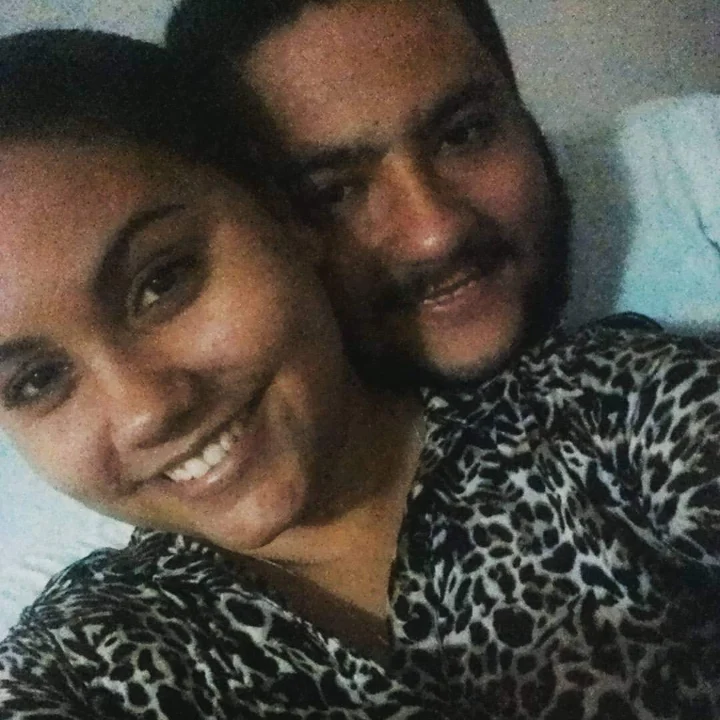
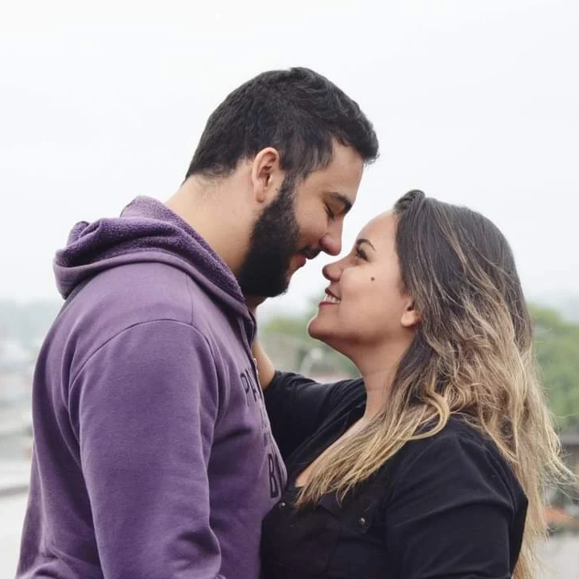
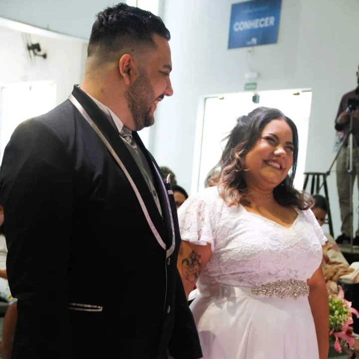
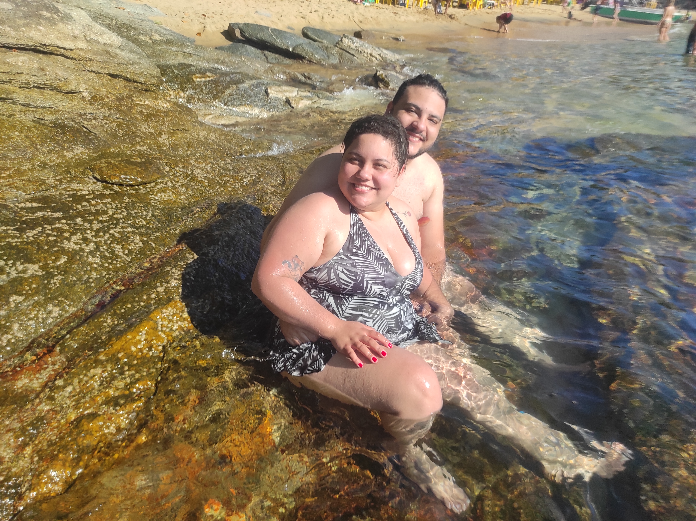
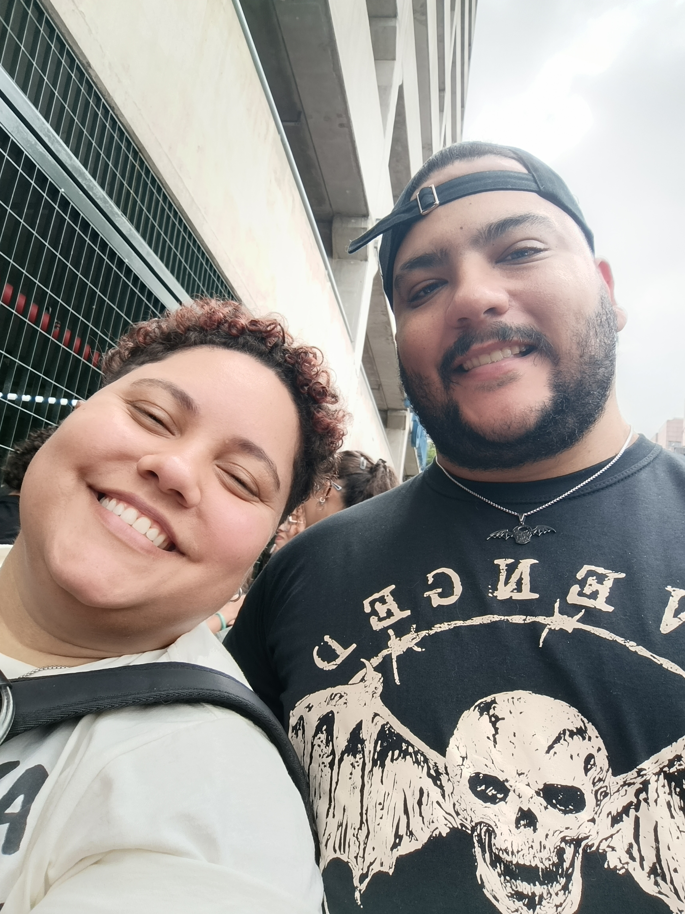

1 desejos, infinitos motivos para celebrar
De repente...

Memórias favoritas
Momentos que eu guardarei para sempre

E em minha boca o teu gosto. O gosto do mel. O cheiro da rosa, ai ai ai. Tuas mão tocando o meu corpo inteiro

Seu sorriso é tão resplandecente. Que deixou meu coração alegre. Me dê a mão. Pra fugir desta terrível escuridão

Gamei no corpo bronzeado, ganhei, Um beijo assanhado, fiquei Todinho arrepiado, parei ...

Dancing in the wind as roses born again, There you'll find me Before the dawn of man, in castles made of sand There you'll find me
Quem nunca viu venha ver caldeirão sem fundo ferver Seu Capa Preta da encruzilhada vai no cemitério, desmancha tudo, ainda dá risada


Se eu pudesse fazer 3 desejos...
Eu desejaria que não existisse no mundo mais a mentira, a ingratidão, que as pessoas que passaram na sua vida percebessem o que perderam que você tivesse a possibilidade de ser tratada da maneira como você merece, que todos pudessem ver como você é uma pessoa maravilhosa, que todos pudessem serem recíprocos nos cuidados que você tem com todos, que a gente não machucasse seu coração.
Eu desejaria que a dor do mundo não te alcançasse e que esse sorriso maravilhoso nunca saísse da sua boca pois ele é farol pra muitos barcos que estão a deriva no mar, é um porto seguro, e cá entre nos te deixa muito mais gata.
Por final desejaria que você acreditasse sempre que realizar seus sonhos é possível, tudo que você quiser pode ser alcançado. Ainda vai ver o show da Adele ao vivo, vai ao show do avanged, do pericles até do patati patata, que sim já liberou o almoço kkkkkkkk. Vai fazer seu nome na confeitaria e construir sua familia. E eu espero estar a altura de estar ao seu lado em todas as suas conquistas.
Você é um poço de energia boa, uma pessoa atenta e companheira, que merece todas as coisas boas que acontecem com você. Felicidade jorra de você, você inspira tanta gente a ser melhor.
Com todo meu amor,
Jorguinho ..... quer dizer seu maior fã Raiel ♥